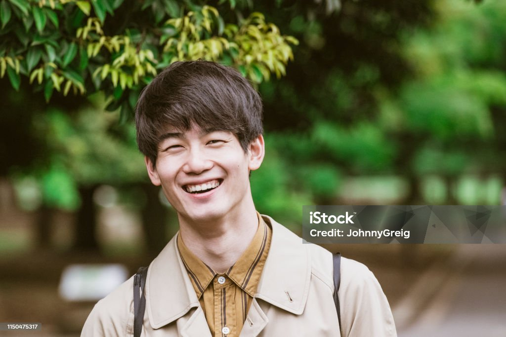
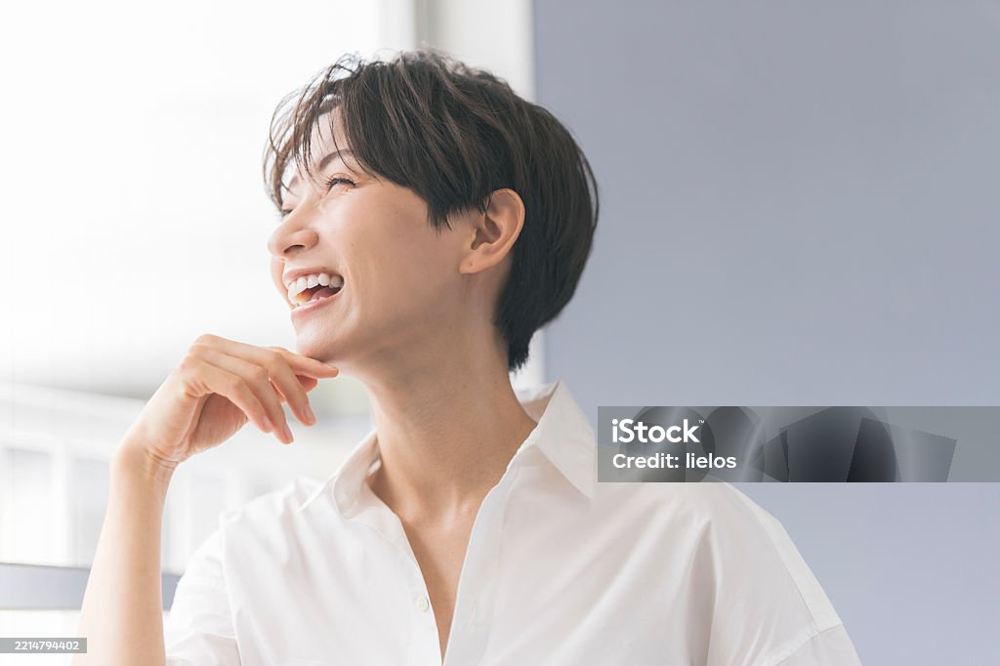

01
「想い」を科学的な共通言語で語り合える仲間
データに基づくフラットで専門的なコミュニケーションが飛び交う組織です。
RECRUITING SITE
RECRUITING SITE
介護の「次」の常識を創る仲間を
募集しています。
CARE × DATA × TEAM

MARUTTO RECRUIT
RECRUIT MESSAGE
【MARUTTOで働く3つの魅力】
1. 「想い」を科学的な共通言語で語り合える仲間
当施設では、ミーティングの7割以上を「ご利用者様の次の生活提案」に費やします。「今日楽しそうでした」という感覚的な報告で終わらせず、「歩行データが向上したから、次の社会参加を提案しよう」と、データに基づくフラットで専門的なコミュニケーションが飛び交う組織です。お互いの専門性をリスペクトし、高め合える最高の仲間が待っています。
2. 専門職が成長してない、計算された「働きやすさ」
長時間の見守りや入浴などの生活援助ではなく、「高度な運動」「データ健康管理」「食事・口腔ケア」に特化した独自の3時間プログラムを採用しています。役割と動線がシステムとして洗練されているため、無駄な業務に追われることがありません。スタッフ自身が心身ともに「余白」を持てるからこそ、目の前のご利用者様に最高の優しさを届けることができます。
3. 介護保険の「その先」へ挑むワクワク感
私たちは、現在の介護保険制度の枠組みだけで終わるつもりはありません。データを蓄積し、ゆくゆくは完全自費の「シニア・ウェルネスクラブ」へと進化させる計画です。業界の常識を塗り替えるベンチャーマインドを持ったチームで、事業の立ち上げという圧倒的にエキサイティングな経験を積むことができます。
VALUE
01
データに基づくフラットで専門的なコミュニケーションが飛び交う組織です。
02
スタッフ自身が心身ともに「余白」を持てるからこそ、目の前のご利用者様に最高の優しさを届けることができます。
03
業界の常識を塗り替えるベンチャーマインドを持ったチームで、事業の立ち上げを経験できます。

PERSON
FLOW
「新しい挑戦をしてみたいけれど、まだ応募する勇気が出ない」 「具体的にどんな風に働くのか聞いてみたい」
面接ではなく、私たちのビジョンやあなたのキャリアについて語り合う時間です。カジュアル面談は履歴書も不要です！
一緒に、介護の次の常識をつくる仲間を募集しています。